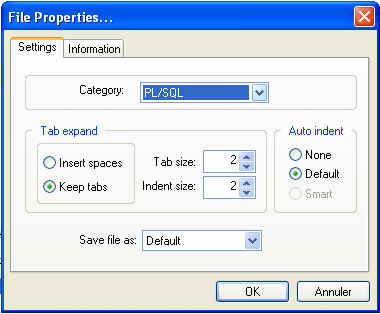
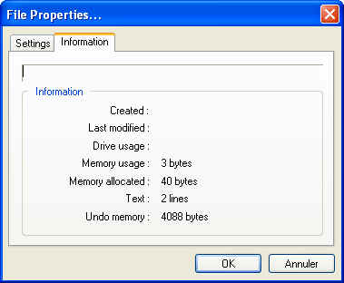

| File -> Properties... | Previous Top Next |
You can change and configure the options for the active file using "Settings" tab. For example, changing the category will change the fonts and colors attributes :

The "Information" tab contains only informational data for the present file (creation date and time, number of lines, memory allocated...) :
